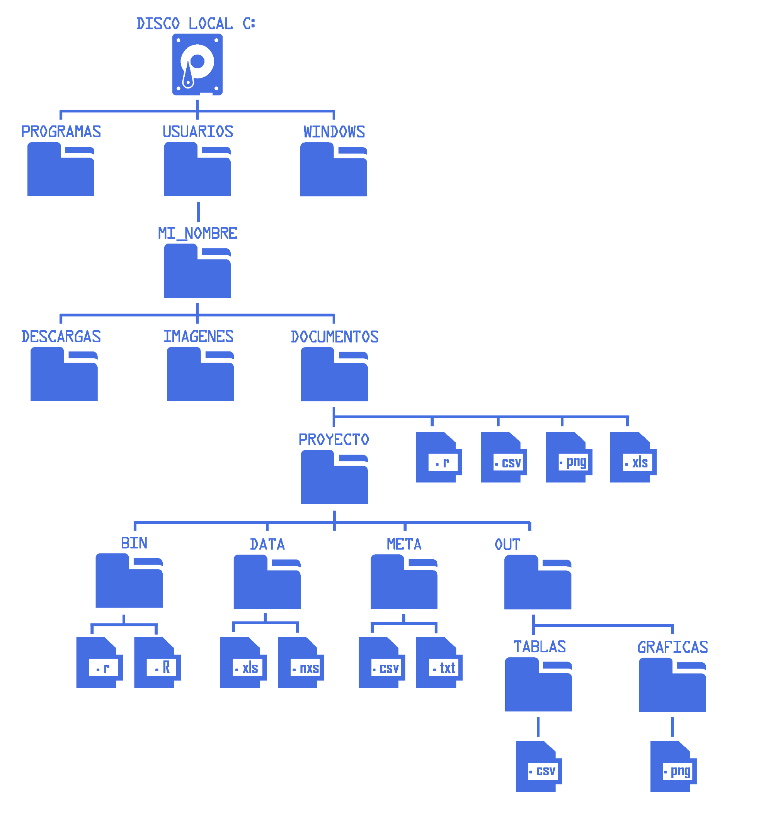

Terminal y sistema de archivos
Objetivos de aprendizaje
Al finalizar, podrás:
Diferenciar terminal, shell y prompt.
Entender el sistema de archivos de Linux y sus rutas (absolutas vs. relativas).
Navegar directorios y listar contenido con opciones útiles.
Crear, copiar, mover, renombrar y eliminar archivos y directorios con seguridad.
Usar el historial, autocompletado y comodines para trabajar más rápido.
Terminal, shell y prompt
Terminal: programa que abre una sesión interactiva (p. ej., GNOME Terminal, Konsole, iTerm2).
Shell: intérprete de comandos. Aquí usamos Bash.
Prompt: línea donde escribes comandos, suele mostrar usuario, host y carpeta actual. Ejemplo:
usuario@equipo:~/proyecto$ _
Sistema de archivos en Linux
Estructura en forma de árbol que comienza en la raíz
/.Directorios comunes:
/home,/etc,/bin,/usr,/tmp,/var.Tu carpeta personal suele ser
/home/tu_usuario(también~).
::: callout-note Atajos de ruta
~ = home del usuario actual
~usuario = home de usuario
. = directorio actual
.. = directorio padre :::
Sistema de archivos y rutas
El sistema de archivos tiene estructura jerárquica en forma de árbol, comenzando desde la raíz / (Linux) o desde la unidad (Windows).

Ruta absoluta
Es la dirección completa desde la raíz del sistema.
Ejemplos (Windows):
C:\Usuarios\MI_NOMBRE\Documentos\PROYECTO\BIN\script.REjemplos (Linux):
/home/usuario/Documentos/PROYECTO/BIN/script.RRuta relativa
Es la dirección desde tu ubicación actual. Si estás en /home/mi_nombre/Documentos/PROYECTO:
cd META # entrar a META
cd OUT/TABLAS # ir a tablas.csv
cd ../DATA # subir un nivel y entrar a DATAComandos principales
| Comando | Descripción | Ejemplo |
|---|---|---|
pwd |
Muestra la ruta actual | pwd → /home/usuario |
ls |
Lista el contenido de un directorio | ls -lh (detallado, tamaños legibles) |
cd |
Cambia de directorio | cd /home/usuario/Documentos |
mkdir |
Crea directorios | mkdir -p proyecto/data |
touch |
Crea archivos vacíos o actualiza su fecha | touch notas.txt |
cat |
Muestra el contenido de un archivo | cat notas.txt |
head |
Muestra las primeras líneas de un archivo | head -n 10 datos.csv |
tail |
Muestra las últimas líneas de un archivo | tail -n 20 log.txt |
less |
Muestra el archivo por páginas | less datos.txt |
cp |
Copia archivos o carpetas | cp archivo.txt copia.txt |
mv |
Mueve o renombra archivos/carpetas | mv viejo.txt nuevo.txt |
rm |
Elimina archivos o carpetas | rm -r carpeta |
history |
Muestra el historial de comandos | history | grep ls |
man |
Muestra el manual de un comando | man ls |
Ejemplos prácticos
# Crear estructura de proyecto
mkdir -p proyecto/{data,results,scripts,docs}
# Crear varios archivos de prueba
touch proyecto/data/sample{1..3}.csv
# Listar con detalles
ls -alh proyecto/data
# Mover y renombrar
mv proyecto/data/sample1.csv proyecto/results/sample_final.csv
# Ver contenido
cat proyecto/results/sample_final.csv
# Eliminar interactivamente
rm -i proyecto/data/sample2.csv